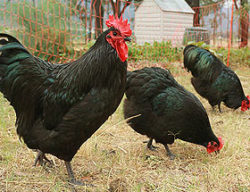
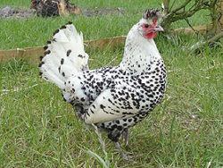
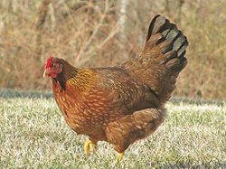

Они все такие разные, но все такие хорошие


Австралорп
Родоначальники мясо-яичного направления. Обычная внешность компенсируется прекрасной яйценоскостью (от 270 шт. в год) и весом тушки свыше 4 кг.
⚙️ Характеристики
- мясо-яичные
- тяжелый (свыше 3,6) кг
- среднетяжелый (2,1-3,5) кг
- очень высокая (более 250) шт. в год
- Неприхотливые к условиям

Аппенцеллер Шпицхаубен
Представители породы отлично чувствуют себя в холодную погоду, поскольку были выведены в Швейцарии. Для содержания обязателен большой выгул.
⚙️ Характеристики
- яичные, декоративные и бойцовые
- средний (1,6-2,0) кг.
- легкий (до 1,5 кг) кг.
- низкая (до 150) шт. в год.
- Вкусное яйцо, Для Северных регионов

Вельзумер
Набирающая популярность в России порода. В первую очередь интересна как несушка с яйцами темного в крапинку окраса. Цыплята очень жизнестойкие, выживаемость высокая.
⚙️ ️Характеристики
- мясо-яичные, карликовые (бентамки)
- среднетяжелый (2,1-3,5) кг
- среднетяжелый (2,1-3,5) кг
- средняя (150-200) шт. в год
- Неприхотливые к условиям, Есть карликовая версия
Доминик
Абсолютная диковина для нашей страны, даже на исторической родине популяция исчисляется несколькими сотнями. Уникальна «неубиваемостью»: отлично живет в жаре и холоде, уверенно добывает пищу самостоятельно.
⚙️ Характеристики
- мясо-яичные
- средний (1,6-2,0) кг
- средний (1,6-2,0) кг
- низкая (до 150) шт. в год
- Неприхотливые к условиям, Для Северных регионов, Для Южных регионов
Транспарито 0.3
Последняя разработка Алабамских ученых. Наполовину прозрачная курица!
⚙️ Характеристики
- декоративные и военные
- малый (0,8-1,0) кг.
- легкий (до 0,75 кг) кг.
- низкая (до 75) шт. в год.
- Не оставляет следов на снегу, полупрозрачное яйцо